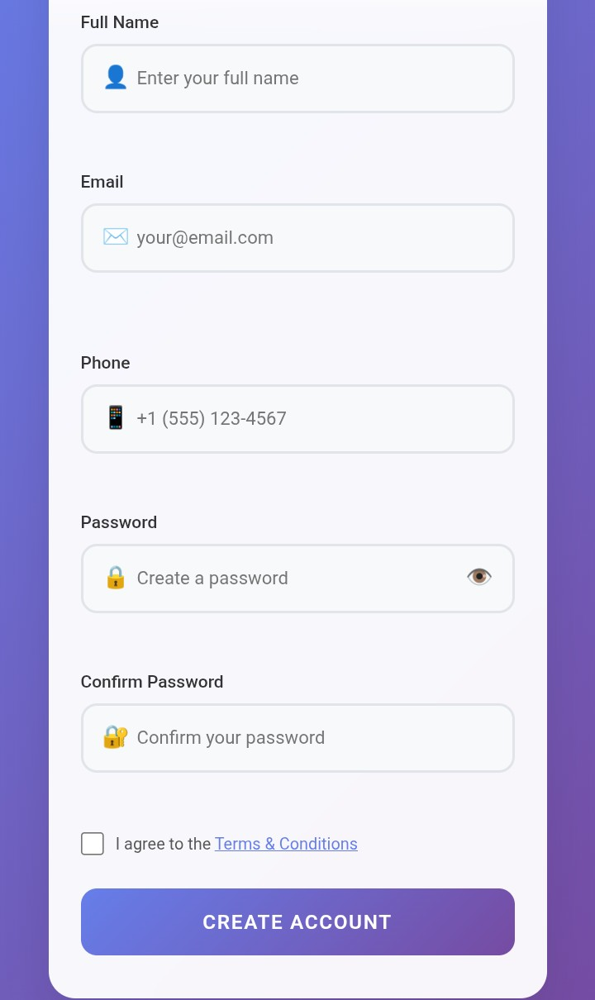

Projects
.jpeg)
Project 1
A web developer designs, builds, and maintains websites and applications, focusing on functionality, layout, and user experience. They use coding languages—such as HTML, CSS, JavaScript, and Python—to create sites, often specializing in front-end (client-side), back-end (server-side), or full-stack development.
.jpeg)
Project 2
A web developer designs, builds, and maintains websites and applications, focusing on functionality, layout, and user experience. They use coding languages—such as HTML, CSS, JavaScript, and Python—to create sites, often specializing in front-end (client-side), back-end (server-side), or full-stack development.

Project 3
A web developer designs, builds, and maintains websites and applications, focusing on functionality, layout, and user experience. They use coding languages—such as HTML, CSS, JavaScript, and Python—to create sites, often specializing in front-end (client-side), back-end (server-side), or full-stack development.
Project 4
A web developer designs, builds, and maintains websites and applications, focusing on functionality, layout, and user experience. They use coding languages—such as HTML, CSS, JavaScript, and Python—to create sites, often specializing in front-end (client-side), back-end (server-side), or full-stack development.

Project 5
A secure, user-friendly login form requires input fields for credentials (username/email and password), a submit button, and optional "forgot password" or social sign-in features. Properly designed, it enhances authentication while keeping the experience simple. Key elements often include HTML5/CSS3 styling for responsiveness.
.jpeg)
Project 6
A web developer designs, builds, and maintains websites and applications, focusing on functionality, layout, and user experience. They use coding languages—such as HTML, CSS, JavaScript, and Python—to create sites, often specializing in front-end (client-side), back-end (server-side), or full-stack development.